The next step in the design of the process is the creation of its Dynaforms. When running a process, the end user mainly interacts with the Dynaforms to enter data and receive information. In ProcessMaker these forms are called DynaForms, because they are dynamically created in a drag-and-drop interface and they dynamically adjust to any device when they are executed.
Let's begin by creating a Dynaform for the first task. To do this, go to the main toolbox at the right of the process map and hover the arrow over the plus icon on the Dynaforms button. Click on the Create option that appears on the right.

A window is opened where the title and the description of the new Dynaform will be defined.
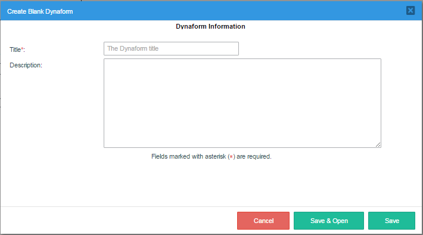
Set the form's title to "Order Request Form" and add a brief description (that will be seen only by the process designers and not by the end users). Finally, click on Save and Open to open the Dynaform Designer.
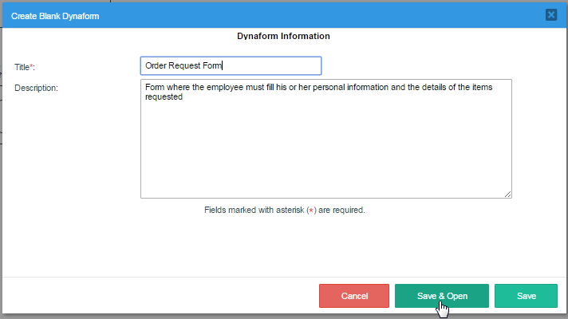
The DynaForm Designer is a flexible canvas where the control fields can be dragged and dropped to create a simple form for the end-user to fill out. The variables and properties of each control can be configured, and Javascript code can be added to provide additional functionality not already in the available controls. For more information about designing DynaForms, see the documentation on the designer and its controls.
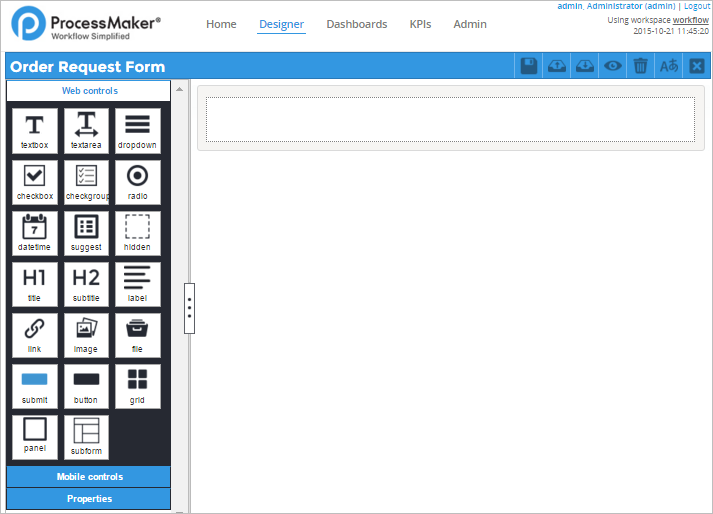
The name of the Dynaform is shown on the left side of the top bar, and the right side has the options to save, export, import, preview, clear, manage languages and close the designer. The left panel is a toolbar holding web controls (and mobile controls for the Enterprise edition), which are interface elements, such as dropdown menus and textbox fields, that can added to the form. The last section, in the left panel, Properties, shows the list of properties for the form when the gray outline fo the form is clicked in the Designer, and for each control when the control is clicked inside the form.
The blank canvas inside the gray rectangle represents the form controls. When the blank Dynaform is first opened, it contains a gray rectangle in the first row where the first control can be added. The first control in the “Order Request Form” is its Title. To add it, go to the Web Controls in the left panel, drag the icon of the Title icon and drop it onto the blank space in the first row.

Notice that the row where the control is dragged will be highlighted in gray, meaning that the control can be dropped there. Finally, the control is added with the label “title_1” by default.
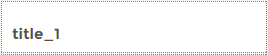
To change the label of the title, click on it in the form and its properties will be displayed in the left-hand panel.
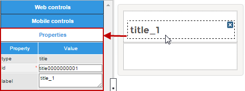
Change the text of the label property from “title_1” to “Order Request”. Notice that the title of the control will be changed while the text is entered.
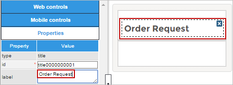
Now, add a subtitle that will help separate the sections in the form. To do this, go to the left panel and click on Web Controls to display the controls again. Drag the icon for subtitle from the toolbar and drop it onto the blank row that appears below the title.
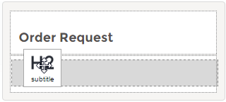
Change the label of the subtitle to "Personal information".
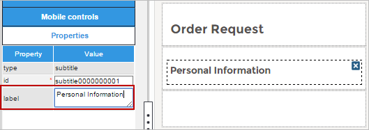
DynaForms are 12 columns wide. By default, when a control is added to a Dynaform it will occupy the full 12 columns, filling an entire row. However, it is possible to define rows that hold multiple controls by defining the number of columns available for controls in the col-span property. For example, a row could have one control with 3 columns of width, a second control with 5 columns and a third with 4 columns, so that they add up to 12 columns.
Divide the next row it into two sections that are 6 columns wide. To do this, click on the blank row below the subtitle to access its properties. Erase the number "12" set by default in the col-span property, and set it to "6 6" (make sure there is a space between the two numbers) and press ENTER. As seen in the image below, the row has been separated into two sections of the same size, which can each hold a separate control.
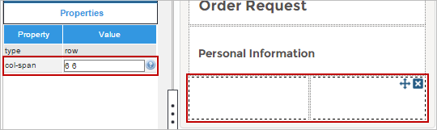
Now, go to the Web Controls section, and drag-and-drop a textbox into the first section of the row. Click on it in the form to view its properties in the left panel.

This textbox needs to be associated with the “employeeName” variable that was created in the previous section. The data in the textbox will be stored in this variable when the form is submitted. Go to the variable property and click on the ellipsis "..." to open a new window where the available variables are listed. Select "[string] employeeName".
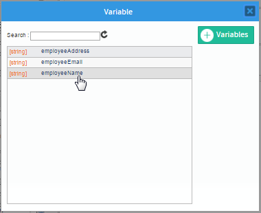
After associating the variable with the control, the variable data type field shows the variable's data type, and the control's id is also changed to the same name as the variable. Finally, change the label of the control to “Name:”.

Now, create the following field in the form:
- "Address" - a textarea with the “employeeAddress” variable (in the same row as “Name”)
- "Email" - a textbox with the “employeeEmail” variable
- "Date" - a datetime with the “requestDate” variable
Note that the "Date" field has many customizable properties, such as the format range of the datetime, but use the default values for now since it can be tricky to set them correctly.
The DynaForm should now look like this:
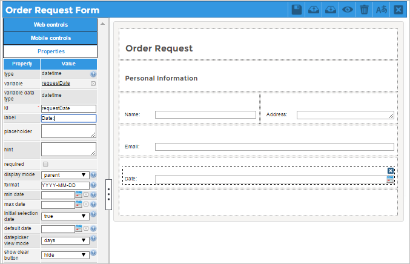
Now, add another section to the DynaForm by adding the subtitle “Purchase Details,” where the details of the requested purchase items will be input by the employee.
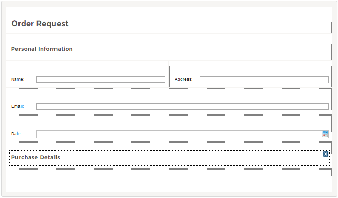
A Grid will be used to input the purchase details. Grids are controls that display data in columns and rows. Each column in the grid contains a separate control and each row is a separate registry. To create a grid, drag and drop the grid icon onto the blank row at the bottom of the form. To add its columns, drag the textbox icon from the left panel and drop it inside the grid.
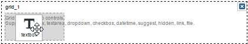
Add three "Textbox" controls inside the grid:
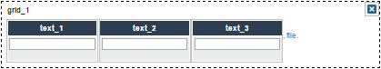
The amount of space controls occupy inside a grid is determined by their column width property. By default, the line number of each row occupies 3% and the trashcan icon to delete each row occupies another 3%, so 94% of the space in the row is available to hold controls. This space can divided up among the three textboxes, so set the column width property in the first to "31", the second to "31" and the third to "32".
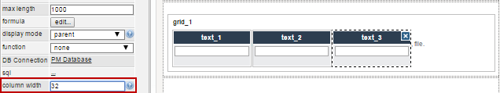
Change the title of the Grid to “Details” and the label of the textbox controls to "Item", "Quantity" and "Description" in their properties. The Grid should look like the following:

Associate the grid with the “itemGrid” variable by clicking on the ellipsis "..." in its properties. The grid properties should be the same as in the following image.
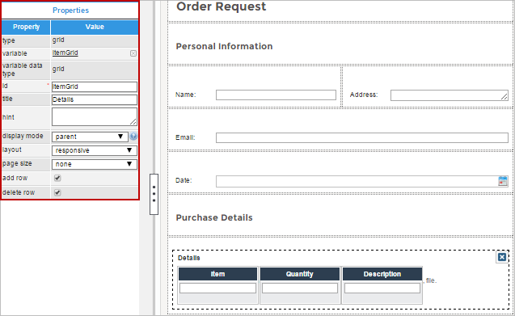
Finally, add a submit button at the end of the form and change its label to “Submit”. The final design of the Dynaform should look like the following image:
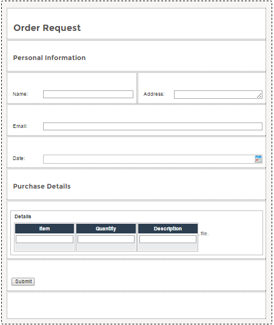
Finally, save the Dynaform by clicking on  in the top bar of the designer.
in the top bar of the designer.
To see how the Dynaform will appear to end users, click on  in the top bar to preview the form. In the preview window that opens, it is possible to see how the Dynaform will appear on smartphones, tablets and desktop computers by clicking on the different device icons in the top toolbar.
in the top bar to preview the form. In the preview window that opens, it is possible to see how the Dynaform will appear on smartphones, tablets and desktop computers by clicking on the different device icons in the top toolbar.
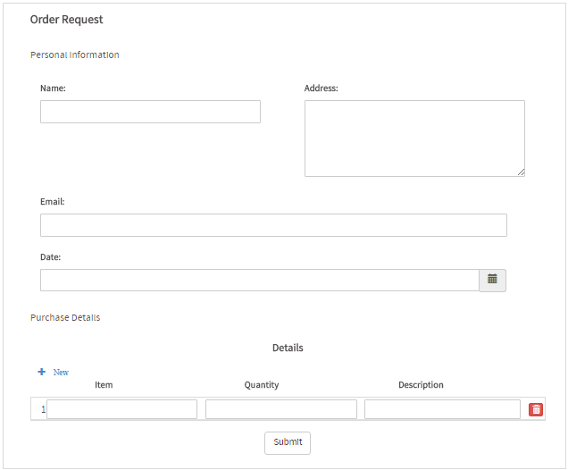
Note: The preview shown for smartphones and tablets gives a rough idea how forms will appear on mobile devices, but the elements may not render the same since each mobile device varies in width and their web browsers may use a different webkits. Also note that this is not a preview for the ProcessMaker mobile app, which has a simplified interface.
Close the preview by clicking on X in the upper right corner to return to the designer. Then, click on X in the upper right corner a second time to exit from the designer.
Now, create a second Dynaform named “Request Approval Form”, which will be used in the second task. In this Dynaform, the supervisor will have the ability to review the information submitted in the first task and either approve or reject it. After adding the Title and Description, click on Save, instead of Save and Open.
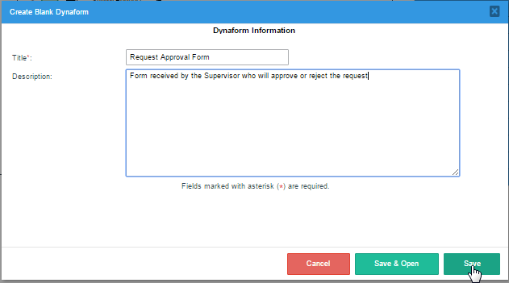
It is not necessary to redesign this form from scratch. Instead of recreating the fields, the contents of the "Order Request Form" can be reused inside the "Request Approval Form". The JSON file of the "Order Request Form" can be exported and then imported inside the "Request Approval Form." Go to the main toolbox on the process map and click on Dynaforms. Then, find the "Order Request Form" in the list of DynaForms and click on its Edit button to open it.
Once "Order Request Form" is opened in the DynaForm Designer, click on  to export it. The JSON file containing the form will be downloaded.
to export it. The JSON file containing the form will be downloaded.

Close the "Order Request Form" and reopen the “Request Approval Form”. Click on the  (import) icon in top bar and select the “Order Request Form.json” file saved on your computer. The entire design of the first DynaForm will be imported into the current design.
(import) icon in top bar and select the “Order Request Form.json” file saved on your computer. The entire design of the first DynaForm will be imported into the current design.
At the end of the Dynaform, before the Submit button, add a new subtitle labeled "Order Approval". Also add a radio control labeled "Approved?".
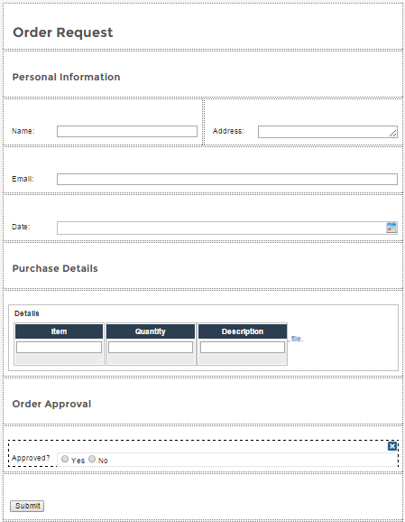
Assign the “requestApproved” variable that was previously created to the radio control. The radio control should have the following properties:

Since the supervisors will only review the request sent by the employee, the data in the "Name", "Address", "Email", "Date" textboxes and the grid control should be read-only. To do this, click on each field and set its Display Mode property to View.
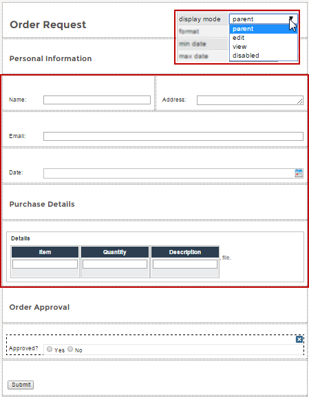
The preview of the Dynaform should look like the image below. Notice that the fields cannot be changed, because the display mode of the control was set to view.
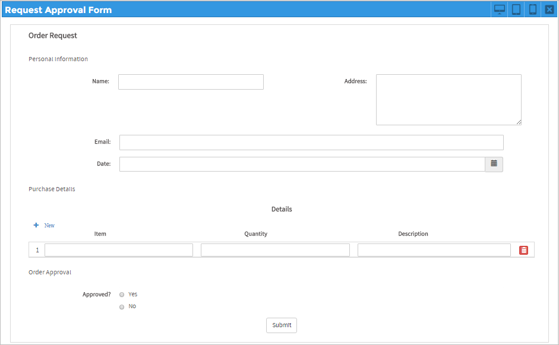
Finally, create the Dynaform named "Deliver Order" for the final task. Add a brief description and click on Save & Open.
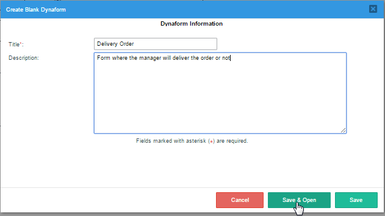
Import the file "Order Approval Form.json" from the first Dynaform into this Dynaform. Go to the end of the Dynaform and add a new subtitle control labeled "Manager Review". Also add a radio control labeled "Deliver Order?". Assign the "requestDelivery" variable to the radio control in its properties, just like before.

Do not forget to set the fields “Name”, “Address”, “Email”, “Date”, "Approved?" and the entire grid to View mode, as was done with the second Dynaform. The DynaForm previous should look like the following image: